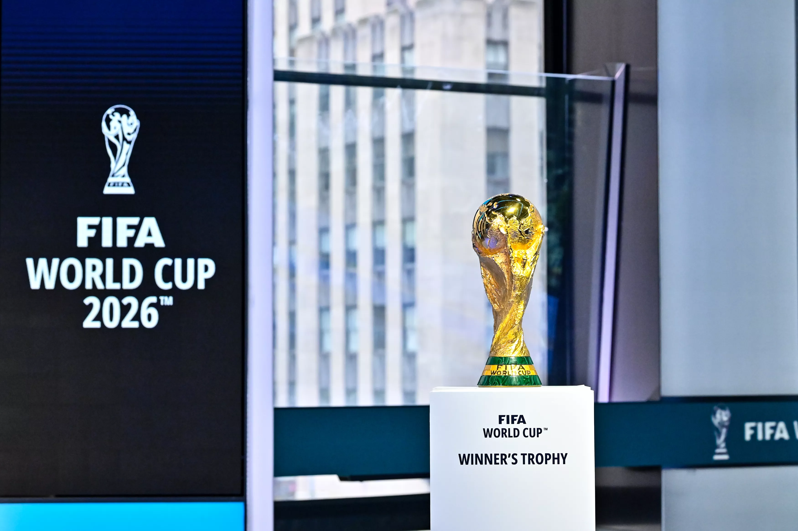

Esta será la primera ocasión en que 48 selecciones se clasifiquen a la fase final, después de la decisión de la FIFA, promovida por Gianni Infantino aprobada el 10 de enero de 2017, de elevar de 32 plazas a 48. Inicialmente se había propuesto un formato de primera ronda que consistía en 16 grupos de tres equipos cada uno, donde clasificarían a rondas de eliminación directa los líderes y sublíderes, sin embargo este no estaba oficializado. Sería hasta el 14 de marzo de 2023 cuando el Consejo ejecutivo de la FIFA aprobó el formato final, que consistiría en una ronda grupal de 12 sectores de cuatro equipos, clasificando el primer y segundo lugar de grupo, uniéndose a ellos los ocho mejores terceros, avanzando a la ronda de dieciseisavos de final, manteniéndose el resto de rondas y criterios de desempate sin cambios. Todo esto se confirmará con la eventual publicación del reglamento de competencia, que normalmente se hace un año antes de la justa.
Participarán cinco equipos de las confederaciones (excepto la UEFA), más uno de la confederación del país anfitrión. Los cuatro equipos peor posicionados en el Ranking FIFAjugarán dos llaves, y los dos ganadores jugarán contra los dos equipos restantes que serán los que estarán mejor posicionados según el Ranking FIFA, los ganadores de estos play-off ocuparán los dos cupos restantes. Los play-off se jugarán en el(los) país(es) anfitrión(es) como una prueba para la Copa Mundial de la FIFA.
Habrá 46 plazas directas y 6 para una repesca mundial, donde se definirán las 2 selecciones que restan clasificar. La FIFA resolvió que el reparto de los 48 cupos fuera el siguiente: AFC: 8 cupos directos + 1 play-offs.